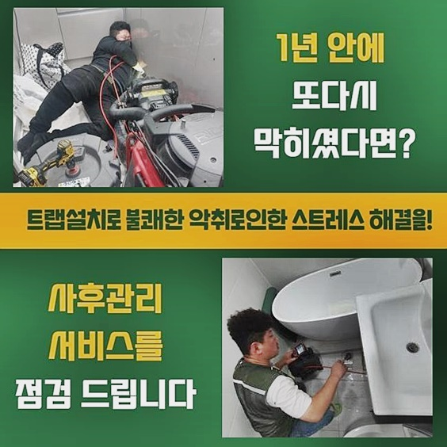
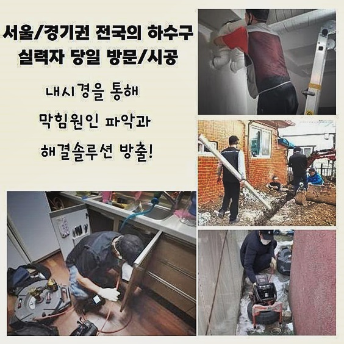
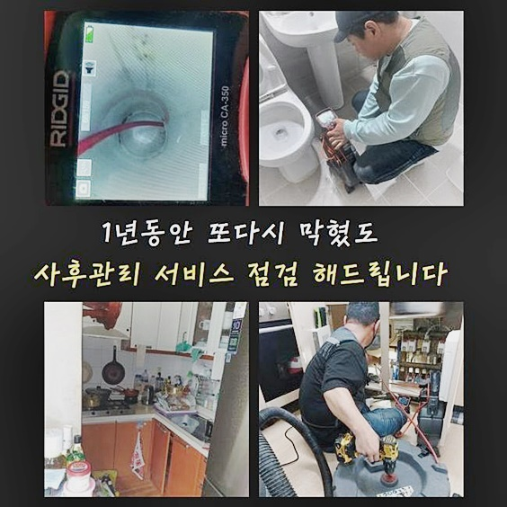
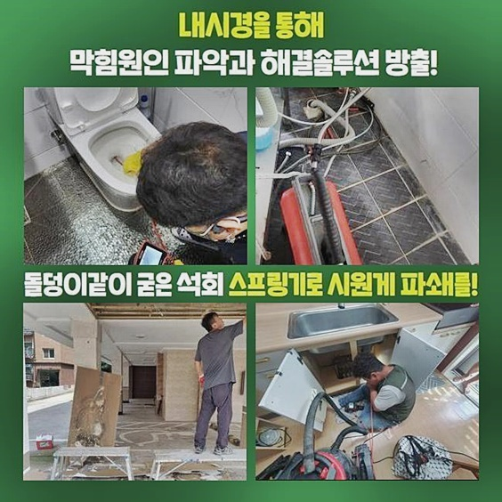
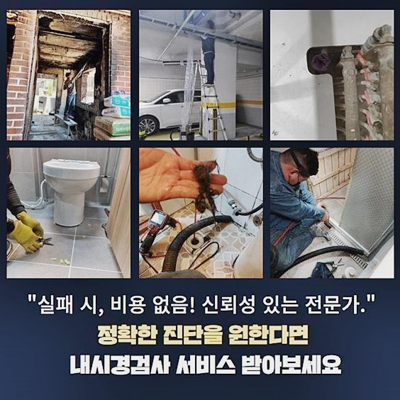

🏠 일산 식사동하수도막힘 성석동 하수구뚫는곳 해결방법
용인 하수구막힘 전문 시공 후기

📋 작업 개요
- 위치: 용인
- 서비스 유형: 하수구막힘, 배관막힘, 누수수리, 역류해결, 뚫는업체, 배관청소, 고압세척, 배관보수
- 작업 일시: 2024. 8. 25. 11:34
- 업체명: 하수구수사대 (010-5615-2118)
🔍 문제 상황
일산 식사동하수도막힘 성석동 하수구뚫는곳 해결방법
상업시설이 밀집되어 있는 복합적인 상가 빌딩에서 하수구 중단이 생겼다는 소식을 듣고서 즉시 해당 위치로 이동해서 보수를 해드렸어요
다수의 영업장들이 영업을 이어가는 다중 상업지는 특히나 배수 곤란이 흔하게 발생할 가능성이 농후합니다
물이 느리게 빠져나갈 땐 전문적 탐색과 조치가 실시되지 않는 현장이라면 여러 가게로 막힘이 늘어날 수 있는 만큼 위급 사항으로 분류하여 해당 상가빌딩으로 쏜살같이 이동하여 해결을 해드립니다
상가 건물은 다분야의 점포들이 여러 호실 모여있는 만큼 예상하는 것보다 훨씬 빠르게 다량의 내부 이물질이 중앙 배관 속으로 점차 층을 이루듯 쌓여가요
현재 식품 관련 업종을 맡고 계셨는데 어느 날 예고없이 나타난 하수 배출의 곤란에다 물도 거꾸로 솟아오르면서 가게 오픈도 못하시던 어려운 상태였습니다
언제부터 이랬는지 질문해보니 최근 며칠 사이에 과거와는 다른 증상들이 의심스럽기는 했으나 별 문제는 아닐거라고 잠시 갸웃거리다가 그냥 관심을 끄고 영업했다고 하셨네요
하수구 관련한 사건들은 수돗물과 직결적인 관련성이 있으므로 피해 규모를 덜어내기 위해선 의심할 지점이 보일 때 초장에 잡아줘야 해요
약속시간 보다 이르게 도착하여 문제가 생긴 지점으로 가서 무슨 오류가 있는건지 하나하나 찾아내었는데 초반에 이야기를 들었던 내용처럼 꽉 막힌데다 거꾸로 솟구치는 일도 동반하여 일어나고 있었죠

🔎 원인 분석
💡 전문가 진단: 정밀 진단 장비를 사용하여 슬러지의 고착 여부를 판명하고 타격/세척 작업을 실시했습니다.
위생이 좋지않은 하수구때문에 썩은 듯한 구린내가 피어오르는 걸 빠르게 판단할 수 있었습니다
악취가 같이 나는 상황이면 위생 상태가 불량해 보이는 하나의 원인이기 때문에 재빠르게 수습하는 게 좋습니다
다각적인 문제가 있는 현상을 전반적으로 개선하기 위해선 오류의 근원을 진단하고 가장 효율적인 노선을 찾아서 작업해 주는 것이 올바른 방식일 수 있어요
얼마나 문제가 진척되었나 탐지하려면 특화된 카메라를 넣어봐야 합니다
얇은 몸체를 포함하고 있으므로 어둡고 깊은 특성의 관로를 분명하게 엿볼 수 있도록 돕는 장비라고 할 수 있어요
실시간으로 볼 수 있는 스크린을 쳐다보면서 내측을 확인 후 밑으로 진출해 나가면 막힘 사고가 도래한 대상지와 추가로 이물질 종류까지 철저히 파악하게 됩니다
전용 카메라를 활용하여 토탈 분석을 시도해 보았더니 천장을 지나가는 배관에서 과거와는 다른 증상들이 나타났다는 점을 발견할 수 있었습니다
배관의 내부 깊숙이까지 관찰해보니 미끌거리는 부패한 기름기 성분이 밀집된 덩어리로 형성된 채였고 어느 기점에 붙어버린 불순물은 물과 반응해서 썩어가던 중인 매출과 직결되는 문제가 있었어요
통수의 어려움을 느끼고있는 현지에 가서 보면 기름기로 뒤덮인 찌꺼기들이 내면에 침식되어 있는 경우가 가장 흔하게 발견되는데요
기름과 물은 섞이지 않는 고유의 특질로 인하여 배관 안에 약간이라도 잔여하게 된다면 하나의 집단이 된 채 굳어버리게 되고 형태는 더 커지게 되어 흐름을 막아서게 됩니다

🔧 작업 과정
내면의 컨디션이 워낙 그리 좋지는 않았기에 장비들을 복합적으로 활용해서 뚫고 정돈하는 것이 낫겠다고 결정하게 됐네요
스케일링을 도와주는 플렉스샤프트를 먼저 적용하여 여러 분야에서 생긴 봉쇄된 곳을 처리해주고 일차적으로 정리된 곳에 고압 세척기로 청소를 하는 노선으로 정했습니다
샤프트는 힘이 세서 단단한 물질을 유연하게 풀어주는 역할을 해내는 장치이고 헤드에 붙은 단단한 체인이 벽체가 압박받는 경우를 줄여주면서 원활하게 길을 내는 강점을 지니고 있어요
일부분에 몰려있는 오물때문에 막힘과 역류가 일어나게 됐다면 단순히 샤프트만 이용하는 것으로도 얼마든지 오류를 보완할 수 있게 됩니다
흐름이 멈췄던 상태가 꽤나 나아졌다 싶다면 다음은 배관이 배치되어 있는 장소로 향해서 고압 살균세척의 프로세스를 진행해요!
천장 부근의 작업이었기에 이행해야 하는 상황인지라 탄탄한 사다리를 받쳐두고 안전한 환경을 만들었어요
이러한 세정 단계에서는 상당한 수준의 찌꺼기가 폭탄처럼 터져버릴 위험이 있으므로 커다란 비닐을 깔아서 완전히 덮어둔 이후에 작업을 스타트하게 됩니다
고압세척은 고압의 물살을 직접 분사해서 딱딱한 잡물까지 없애주는 단계로 오래 머무르면서 경화되어 경도가 높다거나 끈적한 점액질의 물질까지도 완전히 없애주는 힘이 있어요
워낙 파워가 좋기 때문에 세밀하게 강도를 조율하는 등 특성을 잘 이해하는 숙련자가 쓰는 게 좋습니다
무작위로 쏘는 것이 아니라 문제가 없는 구간에는 지장이 일어나지 않게끔 위치에 따라 압력 수치를 조율해서 세정하는 것이 중요합니다
해당 기계가 만들어내는 압력의 수치는 괄목할만한 정도로 뛰어나기에 마구잡이식 난사로 세정을 시도한다면 파이프가 데미지를 입는 것을 일으켜 누수와 침수처럼 오히려 악화가 되어버릴 암담한 사태를 낳게 됩니다
다수의 경우를 만나온 지식을 토대로 장치의 특성을 깊이 있게 알고 2차적인 피해가 없게 시공을 마무리하려고 편법 없이 작업합니다
잔여물이 없는 결과물이 형성될 수 있도록 메인이 되는 고압 세척에 착수하기 전에 배관의 강도와 조건을 분석하는 탐색 단계를 통해서 무리가지않는 선에서 작업해요
클리닝을 완료하고 난 후 내시경을 다시 발동시키면 같은 배관이라고 볼 수 없게 깨끗해진 파이프 내부 상황을 체감할 수 있습니다
다채로운 업종의 가게들이 밀접하게 이어져 있는 상가일 경우라면 막힐 위험이 크니 상황에 맞는 시기를 결정해서 클리닝을 적용해 준다면 하수구 이슈에 대한 고통과 일상의 방해를 해결을 볼 수 있게 됩니다
악취나 막힘과 같은 설비적인 오류가 생긴다면 무엇보다도 적절하게 뚫는 작업이 건물의 안녕을 돕습니다


✅ 작업 완료
방치되지 않고 스피드하게 작업이 달성된다면 더욱 합리적인 비용으로도 보완을 해보실 수 있는 점을 꼭 전달드리고 싶습니다!
약간 불편해도 참고 쓰신다면 더 심화된 오류까지도 유발될 수 있으니 문제점을 알아차리면 즉각 와달라고 불러주셔야만 간편한 수단만으로도 환경을 복구시켜 드리게 됩니다
다수의 해결 케이스를 함양한 전문인력이 빠른 스케줄을 잡아드려서 어려움을 모두 씻어내려줄 최대효율을 내줄 작업을 맞춤 적용해 드리고 있습니다
쾌적한 하수도를 구축하고 싶다면 그 어떤 어려움 느끼지 마시고 든든하게 처리해주는 업체인 저희에게 전화를 주시면 됩니다!



⚠️ 베란다 누수 및 방수 관리 방법
- ✅ 비가 많이 올 때 창틀 주변이나 아래층 천장에 얼룩이 생기는지 정기적으로 확인해 보세요.
- ✅ 우수관 주변 실리콘 마감이 들뜨거나 깨진 틈새가 있는지 손상 여부를 수시로 체크하세요.
- ✅ 베란다 바닥 타일의 줄눈(메지)이 소실되면 그 틈으로 물이 침투하여 누수가 유발됩니다.
- ✅ 누수 의심 증상 발견 시 방치하면 아래층 손실이 커지므로 즉시 전문가의 진단을 받으십시오.
💡 핵심 정리
- 확실한 장비 작업(내시경 점검 및 샤프트 스케일링)으로 원인을 뿌리 뽑습니다.
- 작업 후 1년 이내에 동일한 부위 재발 시 100% 무상 A/S 서비스를 보장합니다.
- 서울 · 경기 · 인천 전 지역에 24시간 언제든 긴급 출동할 수 있도록 항시 대기 중입니다.
❓ 자주 묻는 질문 (FAQ)
🚨 용인 하수구막힘 문제로 고민이신가요?
정확한 원인 진단과 확실한 시공으로 재발 없는 해결을 약속드립니다.
24시간 긴급 출동 | 서울 · 경기 · 인천 전지역 | 1년 내 재발 시 무상 A/S